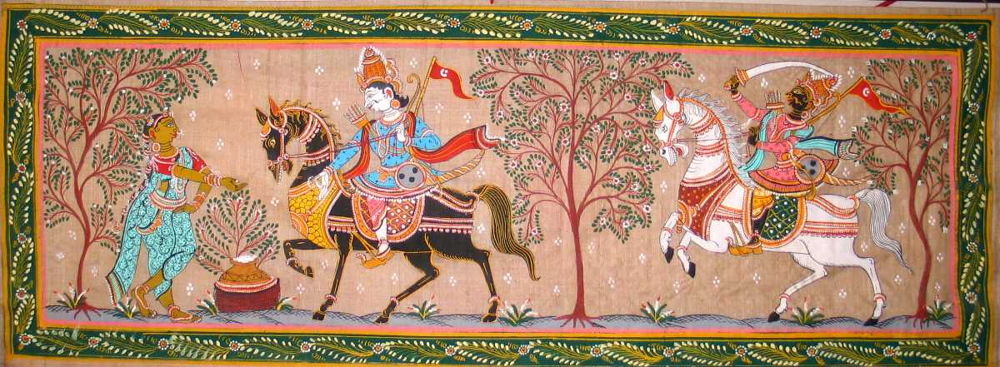
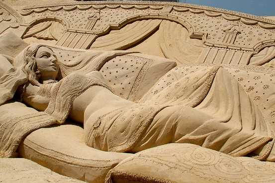

1. Sun Temple
Designed in the silhouette of a gigantic chariot along with seven horses and twenty-four wheels, this entire temple was conceived as a chariot of the Sun God. It reflects the remarkable genius of architects that envisioned and went through with it. A UNESCO World Heritage Site, the precision and intricacy of its sculptural work is worth seeing.
Navigate
2. Arts Culture of Odisha
It is impossible to list every form of visual art and craft this uber-talented state boasts of but here are some of the best-known ones: Pattachitra (Cloth Painting) Literally, 'Patta' translates to cloth and 'Chitra' means picture. The themes and motifs are mythological, typically revolving around the Jagannath and Vaishnava sect. Lord Jagannath and Radha-Krishna paintings are a rage among buyers. Pattachitra showing Ganesha and Shiva. Since it is a traditional art-form, the Chitrakara's (painter) very home is his own studio where his family members act as helping hands. The final painting is rendered in the form of a design on a canvas with decorative borders. Sometimes, palm-leaves are also used to form the canvas
Sand Art
With clean, fine-grained sand and water as its raw materials, this is an indigenous form of art that found its origin recently if a comparison is drawn to the other forms of art. It is practised on the beaches of Puri with subjects ranging from Hindu deities to international occasions. With the help of tourism, this art-form has developed exponentially and found worldwide recognition.
